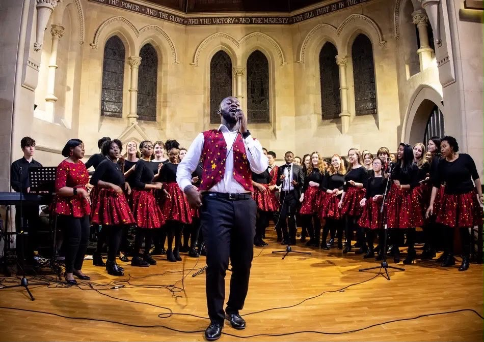

The Deaton Academy
Professional live singing for weddings, celebrations and events — and vocal coaching that helps beginners and rising singers grow into their sound, with Dean Eaton.
Introduction
As a professional live singer, recording artist and proprietor of The Deaton Academy, I deliver live event singing for weddings, parties, graduations, birthdays and other occasions.
As choir director of the Cambridge University Gospel Choir for over six years, I also offer singing coaching for beginners and novices — whether individually or in groups — including choir workshops, group tutoring and private home tutoring.
The goal is simple: to help people grow more confident in their tone and current voice, while building the capacity for a better sound.
Dean Eaton · Live Singing
I sing across a range of genres — R&B, Gospel, Adult Contemporary, Pop and Country. Expect a delivery of stunning vocals, tailored for ceremonies and gatherings of every kind.
Performances are typically delivered with backing tracks, and — by special arrangement — with piano accompaniment. Set lists are agreed together during correspondence, so the music suits your day.
Book for an Event
Deaton Academy Skills Service
A service for singers at beginner and intermediate levels, designed to refine your technique and give you the confidence to sing freely.
Lessons are mainly in person, though Zoom sessions can be arranged. Available one-to-one or in groups, including choir workshops and private home tutoring.
Book a Singing LessonA growing community
Media & Portfolio
A selection of live moments. Watch full performances on the Dean Eaton YouTube channel.
Testimonials
“I've been singing with Dean for a few years now, and the difference in my voice has been incredible. Thanks to the way he teaches, I've developed a much better ear for pitch and can naturally hear where my voice should sit within the group. His approach makes everything feel achievable, and I honestly don't think there's a song Dean couldn't teach us to sing!”
“My experience as a newcomer to choir singing has been a real joy, under the leadership of Dean Eaton. As conductor and educator of CUGC, he has created a space in which I can develop my voice and grow in confidence. Through workshopping I am learning a range of vocal techniques and how to sing in harmony; enabling me to use my voice in the most effective way.”
“Warm, patient and genuinely encouraging — Dean has a gift for drawing the best out of every voice in the room. Every session leaves me more confident than the last.”
Booking & Contact